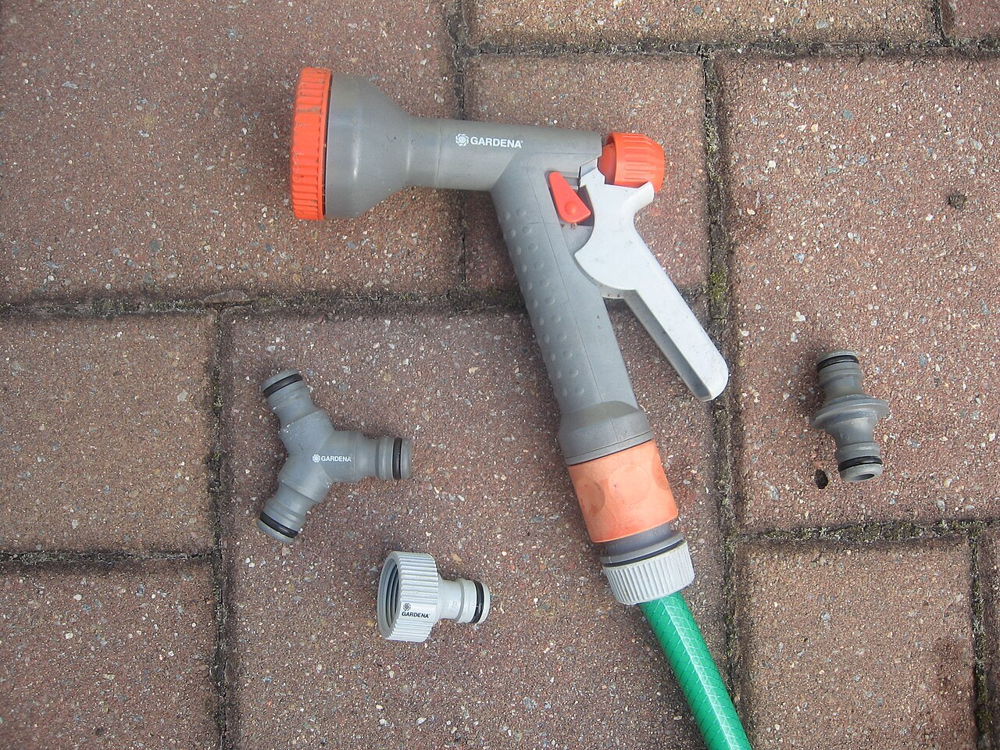
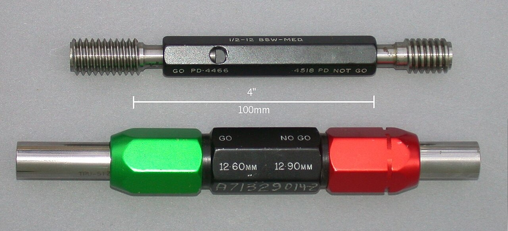
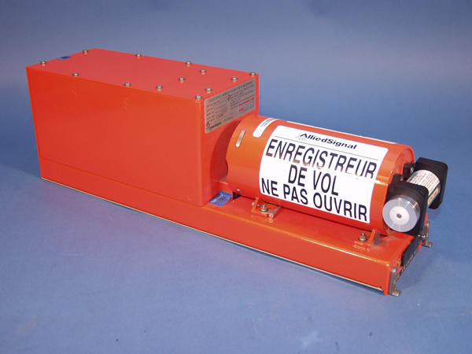
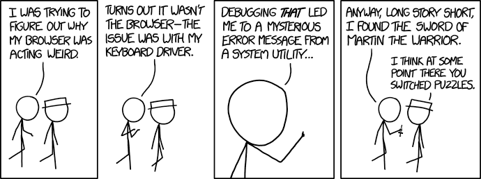
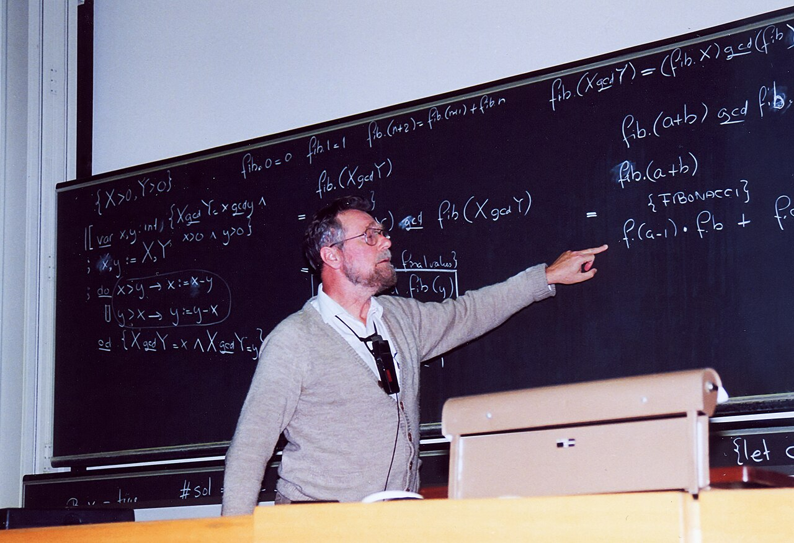
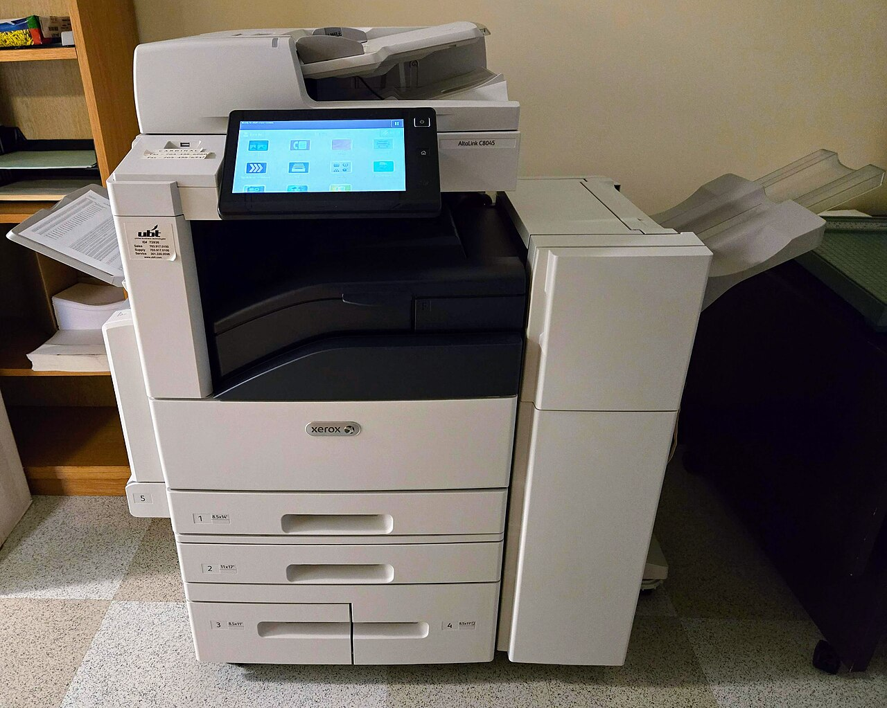
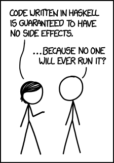

Review, Integration and What Comes Next
Connect state, decisions and loops to classes, collections, exceptions and text I/O. Build and explain a small data pipeline, find boundary bugs, and preview functional transformations (optional).
The lecture, then the practice
Choose a section, or use the arrow keys in the section list. Hover or tap an underlined part of a program for its explanation. Run it, then use Edit to test a prediction of your own.
01Trace the foundation accurately
1.1Use the state you can observe
Tracing means running a program on paper, one step at a time, and writing down every variable after each step.
For a loop, say what the accumulator means. Here, passed counts the passes in the processed prefix (the boxes already looked at). That sentence is a loop invariant: true before the loop, kept true by each pass, so true at the end.
| Step | i | marks[i] | marks[i] >= 50 | passed after |
|---|---|---|---|---|
| before the loop | – | – | – | 0 |
| 1 | 0 | 49 | false | 0 |
| 2 | 1 | 50 | true | 1 |
| 3 | 2 | 85 | true | 2 |
| loop test | 3 | – | 3 < 3 is false: stop | 2 |
Test on the boundary. 50 is the only mark where >= and > disagree.
for (int i = 0; i <= marks.length; i++) runs one step too far. It reads marks[3] of a 3-element array, and Java throws ArrayIndexOutOfBoundsException (Python: IndexError). A for-each loop has no bound to get wrong.
“The most effective debugging tool is still careful thought, coupled with judiciously placed print statements.”
Brian W. Kernighan, UNIX for Beginners, 2nd edition, 1978 Portrait: Ben Lowe, 2012 · CC BY 2.0A print statement is a trace table the computer writes. Print the state before and after each change, and compare it with your hand trace.
speed <= 50, not speed < 50. A pass mark works the same way: “50 or more passes” is mark >= 50. Marks of 49 and 85 get the same answer from >= and >, so only a test with exactly 50 can tell them apart. Photo: DeFacto, 2010 · CC BY-SA 3.01.2Separate mutation from rebinding
A call copies each argument’s value into a new parameter. Java: “the values of the actual argument expressions initialize newly created parameter variables” (JLS §8.4.1). Python: “arguments are passed by assignment in Python” (Programming FAQ). When the value is a reference, both names lead to the same object.
- Mutation changes the object. Every name for that object sees the change.
- Rebinding (assigning to a name) moves only that name. The caller’s variable still refers to the old object.
| Operation in the function | Java | Python | Does the caller see it? |
|---|---|---|---|
| change an element | marks[0] = 50; | values[0] = 50 | yes: same object |
| add an element | list.add(3); | values.append(3) | yes |
| call a mutating method | s.setMark(60); | s.mark = 60 | yes |
| assign the parameter | marks = new int[] {9}; | values = [9] | no: only the local name moves |
| build a new list | – | values = values + [3] | no: a new list, bound to the local name |
| extend in place | – | values += [3] | yes: for a list, += changes it in place |
If it were, a method could swap the caller’s two variables. It cannot: static void swap(int[] a, int[] b) { int[] t = a; a = b; b = t; } swaps only its own copies. Say instead: Java passes every argument by value, and the value of an object variable is a reference. Python works the same way.
1.3Strings and numbers never change
An immutable object never changes. Examples: Java’s String and Integer, and Python’s str, int, float and tuple. Methods like name.toUpperCase() and name.strip() return a new string. Keep it, or it is lost.
| Looks like a change | What really happens | Do this instead |
|---|---|---|
name.trim(); (Java) | a new String is returned and thrown away | name = name.trim(); |
name.strip() (Python) | a new str is returned and thrown away | name = name.strip() |
count += 1 inside a function | rebinds the local name to a new number | return the new count |
point[0] = 5 on a tuple | TypeError: tuples cannot be changed | build a new tuple |
So a function cannot change a caller’s number or string. To get a new value out, return it.
name.trim(); alone on a line runs with no warning in Java. name.strip() is just as silent in Python. If a string “did not change”, look for a result you never assigned.
1.4Copy when you need an independent list
Assignment never copies an object. After b = a (Python) or List<Integer> b = a; (Java) there is one list with two names. For an independent list, copy it:
| You want | Java | Python |
|---|---|---|
| a second name for the same list | List<Integer> b = a; | b = a |
| a new list, same elements | new ArrayList<>(a) | list(a) or a.copy() or a[:] |
| a new array, same elements | Arrays.copyOf(arr, arr.length) | – |
| a new list of changed elements | a loop (or stream) that fills a new list | [x * 2 for x in a] |
These copies are shallow: both lists share the same elements. Change a Student’s mark through one list, and the other list shows it. Numbers and strings are safe, because they never change.
def add(x, items=[]): shares one list across calls. “Default values are created exactly once, when the function is defined” (Python FAQ). So add(1) returns [1], then add(2) returns [1, 2]. Use items=None and create the list inside (Exercise 4).
Trace the pass counter, then move the boundary
Pick the marks and the comparison, predict the output, then press Next. The shaded boxes are the processed prefix. passed counts the passes in exactly those boxes. Try {50} with both comparisons: it is the one input that tells >= and > apart.
This interactive diagram needs JavaScript.
Two names, one list: mutate or rebind?
Each arrow is a reference from a name to an object. Step through the example, then swap its two middle lines and predict again. In both languages, mutating an object shows through every name that refers to it. Rebinding a name moves only that name.
This interactive diagram needs JavaScript.
- The last valid index is one less than the length.
- After each pass,
passedcounts the passing marks in the processed prefix.
- Mutation: changes the list that the caller and the parameter share.
- Rebind only the local name to a new list.
- Mutation. The parameter holds a copy of the caller’s reference, so the caller’s array changes: 45 becomes 50.
- Rebinding. Only the local parameter moves to a new array. The caller’s
marksis untouched, so this line has no visible effect. - A
Stringcannot change, so this only rebinds the parametertext. The caller’snameis still"linh". - The line that does nothing: a new upper-case string is built and thrown away. The next line still prints
linh. - Keep the result in a variable.
loudisLINH.nameis stilllinh.
Draw the list objects and references before and after change(). Then trace the Java loop with zero marks and with one mark exactly equal to 50.
02Combine parsing, models and reports
Student, add it to the summary. Passing one stage proves nothing about the next: a line that splits neatly can still hold bad where the mark should be. Photo: USDAgov, 2018 · public domain2.1Make each stage have a clear contract
Most programs in this course read text, turn it into data, check it, store it in objects, compute and report. Give each stage one job and a contract: what it accepts, what it produces, and how it fails.
| Stage | In → out | Fails when | Java | Python |
|---|---|---|---|---|
| read | input → one line | no lines left | readLine() returns null | for line in f: ends |
| split | line → fields | wrong number of fields | check parts.length | check len(fields) |
| convert | text → number | not a number | NumberFormatException | ValueError |
| validate | number → accepted number | outside 0..100 | throw new IllegalArgumentException(…) | raise ValueError(…) |
| model | fields → object | never, if the checks came first | new Student(name, mark) | Student(name, mark) |
| summarise | objects → numbers | no records at all | a loop that returns values | a loop, or sum() |
| report | numbers → text | – | String.format, println | f-string, print |
Passing one stage proves nothing about the next. Linh,abc splits but fails to convert. Binh,120 converts but fails validation. So test each stage with its own bad input. One big function that does every job can only be tested as a whole.
Python’s int(" 85") is 85. Java’s Integer.parseInt(" 85") throws NumberFormatException. In Java, call trim() before you convert.
2.2Choose an explicit error policy
Decide in advance what happens to bad rows, and write it down. The two policies differ only in where the try goes:
| Policy | Where the try sits | Good for | Risk |
|---|---|---|---|
| report and continue | inside the loop, around one row | marks lists, surveys, logs: one bad row should not lose the rest | bad rows go unnoticed unless you report them |
| stop at the first fault | around the whole loop | payments, settings files: half-processed input is worse than none | one typo stops everything |
for line in lines:
try:
records.append(parse(line))
except ValueError as error:
rejected.append((line, error))Either way, a rejected row never reaches the good records. The summary counts those records, not the lines read. Report both: “5 lines read, 2 stored, 3 rejected”.
The journalist Christopher Null really is called Null. In Wired in 2015 he wrote that some websites reply “the last name field can’t be blank”, some say “null” is a reserved term, and some just crash. Check what a field means, not what it looks like. Christopher Null, Wired, 5 November 2015
try sits: inside the loop or around it. Either way the cracked egg is never packed: a rejected record must not reach the list that the summary counts. Photo: USDAgov, 2018 · public domain2.3Turn a row into an object early
Once a row passes its checks, make it an object: a Student (Weeks 5–6). Parallel lists names[i] and marks[i] can drift out of step. An object keeps each name with its mark.
Let the constructor guard the rule. If new Student("Binh", 120) throws, every Student that exists is valid, and later stages need no re-check. This is the class invariant from Week 6.
| Java | Python | |
|---|---|---|
| reject a bad value in the constructor | throw new IllegalArgumentException("mark out of range"); | raise ValueError("mark out of range") |
| stop fields changing later | private final int mark; | by convention: self._mark and no setter |
| one handler for “not a number” and “out of range” | catch (IllegalArgumentException e) also catches NumberFormatException, its subclass | except ValueError catches both int("abc") and your own raise |
A constructor that prints “invalid mark” and carries on still creates the bad object. Throw instead, and let the caller choose the policy (Week 11).
2.4Keep the report as its own stage
Compute first, format last. A summary method returns numbers. A separate report method turns them into text. Then a test can check the average (67.5) directly, and a CSV report needs no change to the calculation (Week 10).
Also handle no valid records at all:
| With no records | Java | Python |
|---|---|---|
total / count, whole numbers | ArithmeticException: / by zero | ZeroDivisionError |
total / count, decimals | NaN, printed without complaint | ZeroDivisionError |
| largest mark | Collections.max throws NoSuchElementException | max([]) raises ValueError |
In Java 0.0 / 0 is NaN (“not a number”), so a report prints Average: NaN without complaint. Choose an empty-input policy and test it (Exercise 5).
Follow one record through every stage
Both examples, one step at a time. Watch the read position, the variables each stage produces, and (in Python) the record that fails: it raises an exception, is reported, and never reaches records.
This interactive diagram needs JavaScript.
One small app, every topic: objects, a list, exceptions and files
This program writes an input file, reads it line by line, turns each good line into a Student object, handles the bad lines and writes a report. Choose a language and an error policy, then step through. The two policies differ only in where the try/catch sits: inside the loop, or around it.
This interactive diagram needs JavaScript.
Which stage rejects this row?
A parser is a chain of stages, and each stage checks one thing. Pick a row, predict where it stops, then watch it travel. Both programs were run on all seven rows. The messages are their real output.
This interactive diagram needs JavaScript.

- The input stage produces one record at a time.
- Convert the mark field before applying the numeric rule.
- Append only if parsing and validation both succeed.
- Report the bad record and carry on with the next one.
- Added only if parsing and the constructor both succeed. If either throws,
addis never reached. - One handler covers both failures.
NumberFormatException(fromparseInt("abc")) is a subclass ofIllegalArgumentException. - Report both counts. The summary uses
students.size(), the records stored, not the 5 lines read. - The constructor guards the class invariant: every
Studenthas a mark in 0..100. Binh’s 120 never becomes an object. - The split stage checks the field count.
Tuanhas no comma, sosplitgives one field. Without this check,parts[1]would throwArrayIndexOutOfBoundsException, which this handler does not catch. - Java’s
parseIntrejects" 50", so trim the space after Mai’s comma first.
- The split stage checks the shape. Both
"Tuan"and the blank line give one field. - The convert stage.
int("abc")raisesValueError.int(" 50")is fine, because Python ignores surrounding spaces. - The validate stage: 120 is a perfectly good number and still a bad mark.
- Reached only when
parsereturns. A row that raises never gets intorecords. - Report and continue. Keep the line number and the reason, so a person can fix the file.
- The summary counts what was stored (2), not what was read (6).
The idea of building a program from small stages joined end to end is older than Unix. On 11 October 1964 Doug McIlroy wrote in a Bell Labs memo: “We should have some ways of connecting programs like garden hose—screw in another segment when it becomes when it becomes necessary to massage data in another way.” (The repeated phrase is in the original typescript.) Dennis Ritchie later wrote that pipes appeared in Unix in 1972 “at the suggestion (or perhaps insistence)” of McIlroy. A read → parse → validate → summarise pipeline is the same idea inside one program. McIlroy memo, 1964 (Ritchie's transcription) Ritchie, The Evolution of the Unix Time-sharing System (1979)

Add a malformed row and an out-of-range mark. Write the expected diagnostic policy before editing the implementation, then verify which rows reach the summary.
03Test boundaries and explain causes
3.1A test should distinguish a mistake
A test runs code on an input you chose, with the expected output written down first. A good test fails if the code has a particular mistake. A test that passes either way proves nothing. Most mistakes live at the edges:
| Case | Example | Catches |
|---|---|---|
| no data | an empty file, [] | division by zero, the largest of nothing |
| one item | [50] | loops that skip the first or the last element |
| exactly on the boundary | 50 | > written instead of >= |
| one each side | 49, 51 | a boundary moved by one |
| top of the range | 100, 101 | a missing or wrong upper check |
| duplicates | two students called An | a dictionary that silently keeps only one |
| untidy text | a blank line, Mai, 50 | split and convert stages that assume tidy input |
| no final newline | Mai,50 as the last line | code that only counts lines ending in a newline |
For a method that changes an object, check the state too: after take(2) returns true, left() should be 0.
In June 2006 Joshua Bloch wrote that the binary search in Java’s own library had been broken, “lying in wait for nine years or so”. In int mid = (low + high) / 2; the sum overflows to a negative number when it passes the biggest int. That needs an array of about a billion (230) elements, so no ordinary test found it. The fix is int mid = low + ((high - low) / 2);, and Jon Bentley’s proved-correct search in Programming Pearls had the same bug. (Java’s Integer.MAX_VALUE + 1 is -2147483648. Python’s whole numbers never overflow.) Bloch, Google Research blog, 2 June 2006

take(n) do the same: 0 (just below what is allowed), 2 (exactly what is left) and 3 (just over). A test from the comfortable middle, like take(1), gives the same answer for several wrong versions too. Photo: Glenn McKechnie, 2005 · CC BY-SA 3.03.2Explain from input to consequence
Explaining is not reading code aloud. Connect the state that matters to what you can see. For a bug, use four steps:
- Counterexample. The smallest failing input:
[50]with>prints 0, not 1. - First wrong state. Trace until a variable is wrong: after the first pass
passedis 0, not 1. - Cause and fix.
mark > 50leaves out 50, but the rule says “50 or more”. Use>=. - Predicted effect. Say it will now print 1, then run it.
| Weak explanation | Strong explanation |
|---|---|
| “Line 6 checks if the mark is greater than 50 and adds one to passed.” | “With [50], passed stays 0 because 50 > 50 is false. The rule says 50 passes, so it needs >=; then it prints 1.” |
| “It crashes because of an error.” | “The line Tuan has no comma, so parts[1] does not exist and Java throws ArrayIndexOutOfBoundsException. Check parts.length first.” |
| “The list changed by itself.” | “change was given the caller’s list and appended to it: mutation through a shared reference.” |
Everything after the first wrong state is a consequence. Fix the cause, not a consequence, or the bug turns up somewhere else.

3.3Error messages are evidence
A crash tells you what went wrong and where. Java prints the exception type first. Python prints it on the last line of the traceback (Week 1). Most crashes in this course are one of these:
| Java | Python | Usually means |
|---|---|---|
NumberFormatException | ValueError from int() | text that is not a number reached the convert stage |
ArrayIndexOutOfBoundsException, IndexOutOfBoundsException | IndexError | an index one past the end, or a missing field after split |
NullPointerException | AttributeError: 'NoneType' object has no attribute … | a variable that never got an object, or a method that returned null / None |
ArithmeticException: / by zero | ZeroDivisionError | an average of no records |
ConcurrentModificationException, usually | no error, but elements are skipped | removing from a list while looping over it (Week 7) |
FileNotFoundException | FileNotFoundError | a wrong file name, or the program runs in a different folder (Weeks 9–10) |
A logic error, such as > for >=, prints a wrong answer without crashing. Only a test with an expected value written in advance catches it.
“Beware of bugs in the above code; I have only proved it correct, not tried it.”
Donald E. Knuth, closing line of a memo to Peter van Emde Boas, 29 March 1977 (Knuth’s FAQ)Even a proof does not replace running the boundary cases.
Would your test catch the bug?
Below are the original Counter and four buggy copies, each with one small change. A test is useful only if some bug makes it print something different. See what the example’s own calls catch. Then build a small set of tests that catches every bug.
This interactive diagram needs JavaScript.
Find the first state that goes wrong
Left: the trace of the example. Right: the same program with one bug. Press Next to print one row at a time, then click the first row of the buggy trace that is wrong. Start your explanation there. Everything after it is a consequence.
This interactive diagram needs JavaScript.
Where does this bug live?
Eight symptoms, each caused by an idea from an earlier week. Pick a symptom and decide where the cause lives. Then see the program, its real output and the one-line fix. Each answer links back to the week that teaches the idea.
This interactive diagram needs JavaScript.

- Reject both lower and upper boundary violations.
- Exactly the available quantity is a valid request.
- Record the state before the update, so you can explain its effect.
- Add the current mark exactly once.
- The planted bug:
<where the rule needs<=. - Expected answers are written before running: one each side of both boundaries, plus one from the middle.
- A test is useful only if the correct and buggy versions give different answers on it.
!sturns the boolean into text and:<5pads it to 5 characters, so the columns line up.
At a NATO software engineering conference in Rome in October 1969, Edsger Dijkstra put the limit of testing in one line, recorded in the conference report: “Testing shows the presence, not the absence of bugs.” That is why this section asks for tests that distinguish mistakes: every test that passes on a buggy version, like take(1) above, is evidence of nothing. Buxton and Randell (eds.), Software Engineering Techniques, NATO report, 1970, p. 16

Write a counterexample for replacing >=50 with >50, and another for allowing take(0). Use the trace table to identify the first divergence.
04Optional: functional ideas and streams
4.1A new way to express a familiar traversal
Optional enrichment. Most loops do one of three jobs. Functional programming gives each one a name:
| Job | Name | As a loop | Java stream | Python |
|---|---|---|---|---|
| keep some elements | filter | if (m >= 50) kept.add(m); | .filter(m -> m >= 50) | [m for m in marks if m >= 50] |
| change every element | map | out.add(m + 5); | .map(m -> m + 5) | [m + 5 for m in marks] |
| combine into one value | reduce | total += m; | .reduce(0, (x, y) -> x + y) | sum(marks) |
A lambda, like m -> m >= 50, is a function with no name, written where it is used. Java writes parameter -> expression. Python writes lambda parameter: expression, but a comprehension usually reads better.
Ed’s optional Beyond Programming 1 lessons go further. Every pipeline can still be written as a loop.
“So now reduce(). This is actually the one I've always hated most, because, apart from a few examples involving + or *, almost every time I see a reduce() call with a non-trivial function argument, I need to grab pen and paper to diagram what's actually being fed into that function before I understand what the reduce() is supposed to do.”
Guido van Rossum, The fate of reduce() in Python 3000, 10 March 2005 Portrait: Photograph by Daniel Stroud , first retouched version uploaded by User:Deedub1983 , second retouching by User:HarJIT ., 2014 · CC BY-SA 4.0Python 3 moved reduce into the functools module. Use sum() for totals and a loop for anything harder.
4.2Pure functions build a new result
A pure function uses only its arguments and changes nothing: no mutation, no printing, no outside variables. doubled(source) below builds a new list and leaves source unchanged. Same input, same answer.
| Pure | Not pure | Why it matters |
|---|---|---|
return [v * 2 for v in values] | for i in range(len(values)): values[i] *= 2 | the caller’s list survives (1.2) |
return total | print(total) | a test can check a returned value (3.1) |
.filter(m -> m >= 50) | a lambda that adds to an outside list | the Java stream rules forbid it |
Java’s stream documentation says the functions you pass in “must be non-interfering, and in most cases must be stateless” (java.util.stream). They must not change the source, or depend on state that changes while the stream runs.
This site compiles Java 8, so the examples use Arrays.asList and collect(Collectors.toList()). Newer code often uses List.of (Java 9) and Stream.toList() (Java 16), which would not compile here. This section is optional. Current Canvas instructions decide what is assessed.

doubled(source) reads the list and returns a new one, so source is unchanged and the same input always gives the same result. A function that writes into its argument is like scribbling the changes on the original. Photo: Baron Maddock, 2025 · CC BY 4.04.3Lazy pipelines run only when asked
A stream’s intermediate operations (filter, map) only describe work. Its one terminal operation (sum, count, collect) runs it. The second extra below proves this.
A stream works once: a second terminal operation throws IllegalStateException. Python’s map, filter and generator expressions are lazy too. Once used up, they give nothing more.
| Java stream | Python map / filter / generator | |
|---|---|---|
| when does the work happen? | at the terminal operation | when something asks for values: list(), sum(), a for loop |
| use it a second time | IllegalStateException | no error, but no values: [], 0 |
| keep the results | collect(Collectors.toList()) | list(…) |
After bonus = map(lambda m: m + 5, marks), the first list(bonus) gives the values. The second gives [], with no error. If you need the results twice, make a list once and keep it.
4.4Comprehensions in Python
A comprehension builds a collection from another in one expression. Read it from the for: “for each m in marks, if m >= 50, keep m + 5”.
| Builds | Comprehension | Result for marks = [49, 50, 85] |
|---|---|---|
| a list | [m + 5 for m in marks if m >= 50] | [55, 90] |
| a set | {m // 10 for m in marks} | {4, 5, 8} |
| a dictionary | {m: m >= 50 for m in marks} | {49: False, 50: True, 85: True} |
| nothing yet (a generator) | sum(m for m in marks if m >= 50) | 135 |
Java has no comprehensions. A stream with filter, map and collect does the same job.
[print(m) for m in marks] prints the marks, but also builds a useless list [None, None, None]. For effects (printing, appending, writing), use a plain for loop. Use one too when a comprehension needs a nested loop and two conditions.
Watch the marks flow: filter, map, reduce
Optional enrichment. Each mark is a token. Press Next and watch where it goes. The order is real: the "with a log" version prints a line at every step, and the animation replays that output. Then remove the final step and see what runs.
This interactive diagram needs JavaScript.
Build a new list, or change the old one?
Optional enrichment. Step through the example, then switch to a version that doubles the values in place. Predict what print(source) shows each time.
This interactive diagram needs JavaScript.

- Keep only the passing marks.
- The terminal operation runs the pipeline and returns the total.
- Build a new result without changing the input list.
- The caller can reuse the unchanged data after the call.
- The familiar loop: filter with
if, map withm + 5, collect withappend. - The same three jobs in one expression. Read it from the
for. - Lazy: nothing is computed yet.
filterandmaponly describe the work. - The first
listuses the values up. The secondlist(lazy), on the next line, gets[]with no error. - A generator expression feeding a reduction: filter, then add up. No list is built.
- A print inside the lambda shows when the filter runs. (It is a side effect, used only for this demonstration.)
- Printed first: building the pipeline ran nothing.
- The terminal operation. Only now are the marks checked, one by one. Newer Java may write
toList(). - A second terminal operation on the same stream throws
IllegalStateException. Make a new stream frommarksinstead.
In 2004 Jeffrey Dean and Sanjay Ghemawat described Google's MapReduce, which ran data-processing jobs over many terabytes on thousands of machines. Programmers wrote two functions, a map and a reduce, and the library spread the work across the cluster. The paper says the idea was inspired by the map and reduce primitives of Lisp and many other functional languages: the same filter, map and reduce idea as this section, at a much larger scale. Dean and Ghemawat, OSDI 2004
Rewrite the stream example as a loop and compare both outputs on an empty list. Describe what stays unchanged in the input and where the result is created.
05Coding exercises
These are new practice tasks for this website. Read the input and output contract, complete the starter, then run the tests. They are not assessment submissions.
06Team activity
Review a pipeline with a partner
One person writes the input contract, another implements it, and a third supplies counterexamples: empty input, exactly 50, a non-numeric mark, an out-of-range mark, a missing field and a duplicate name. Explain the first incorrect state for every failure you find.
Explain before running
Choose one snippet involving references and another involving dispatch. Predict the output, draw the objects or call path, and state one small change that would alter the result. Run only after the group agrees on a causal explanation.
Sixty-second explanations
In pairs, open Where does this bug live? in section 3. Each person picks a symptom the other has not seen and has sixty seconds to explain it in the four steps of 3.2: counterexample, first wrong state, cause and fix, predicted effect. The listener may only ask “which variable?” or “which line?”. Swap, three rounds each. Then write down the one step you found hardest to say; that is what to practise this week.
07Quiz
Predict the behaviour before running a program. Answer every question, then grade to see explanations. Nothing here is recorded or submitted.
08Further reading
The Ed lessons below provide the course material behind this page. The worked examples, activities and practice questions here are newly written adaptations.
Memory in the JVM
Read the lesson and trace its examples on Ed.
edstem.orgCourse source / referenceHow Data is Passed Through Parameters in Java
Read the lesson and trace its examples on Ed.
edstem.orgCourse source / referenceExceptions
Read the lesson and trace its examples on Ed.
edstem.orgCourse source / referenceBasic Ideas in Functional Programming — optional
Read the lesson and trace its examples on Ed.
edstem.orgCourse source / referenceJava Streams — optional
Read the lesson and trace its examples on Ed.
edstem.orgCourse source / referenceJava 8 streams
Intermediate and terminal operations and non-interference.
docs.oracle.comCourse source / referencePython data structures
Lists and comprehensions.
docs.python.orgCourse source / referenceCanvas subject schedule
Review and requests; current announcements determine the active schedule.
canvas.uts.edu.auPhotographs
From Wikimedia Commons, reused under the licence each one names. Author and licence come from the Commons API rather than from anyone’s memory — see media/fetch-photo.py.
| Image | Source |
|---|---|
| w12-speed-limit | UK 50 mph speed limit sign on a single-carriageway — DeFacto, 2010 · CC BY-SA 3.0 |
| w12-keys | Keys apto 7 — Sarang, 2018 · public domain |
| w12-egg-line | 20181128-AMS-PJK-4963 TONED — USDAgov, 2018 · public domain |
| w12-cracked-egg | 20181128-AMS-PJK-2590 TONED — USDAgov, 2018 · public domain |
| w12-hose | Gardena hose pistol — User:Jarlhelm, 2007 · CC BY-SA 3.0 |
| w12-go-nogo | GaugePlugThreadGoNoGo — Glenn McKechnie, 2005 · CC BY-SA 3.0 |
| w12-flight-recorder | Fdr sidefront — NTSB, 2011 · public domain |
| w12-dijkstra | Edsger Dijkstra 1994 — Andreas F. Borchert, 1994 · CC BY-SA 4.0 |
| w12-gold-pan | Big gold in blue pan (53723859394) — BLM Alaska, 2024 · public domain |
| w12-photocopier | Xerox AltaLink C8045 photocopier — Baron Maddock, 2025 · CC BY 4.0 |
| w12-datacenter | Google Data Center, Council Bluffs Iowa (49062863796) — Chad Davis, 2017 · CC BY 2.0 |


Comics
| Comic | Source |
|---|---|
| xkcd 327 | Exploits of a Mom (2007) — Randall Munroe, CC BY-NC 2.5 |
| xkcd 1722 | Debugging (2016) — Randall Munroe, CC BY-NC 2.5 |
| xkcd 1312 | Haskell (2014) — Randall Munroe, CC BY-NC 2.5 |
M1Twelve weeks on one page
Each week adds one question to ask of every program, and one bug it teaches you to spot. Find your weakest row, then go back to that week’s page, quiz and revision deck.
| Week | Topic | The question to ask | A classic bug |
|---|---|---|---|
| 1 | First programs | Compile, run, read the error | int / int giving a whole number |
| 2–3 | Choosing and repeating | “What happens on the boundary?” · “What makes this stop?” | two ifs where an else was needed; a loop that never ends |
| 4 | Methods and records | What goes in, what comes out? | printing where a return was needed |
| 5 | Classes and enums | Which object owns this data? | == on two strings in Java |
| 6 | Reliable classes | Can an object ever be invalid? | a public field that lets other code skip the rule |
| 7 | Lists and generics | Which index, and is it still valid? | removing while looping forwards |
| 8 | Inheritance and interfaces | Which method runs: the declared type or the object? | forgetting that the object’s class decides |
| 9 | Exceptions and input | What can go wrong, and who handles it? | a broad catch that hides the real cause |
| 10 | Output and reports | Is the output exactly the contract? | output never flushed or closed, so the file stays empty |
| 11 | OOP design | Who should own this rule? | the same rule copied into two classes |
| 12 | Review and integration | Which stage, which state, which boundary? | counting lines read instead of records stored |
Preparing for the final assessment
Everything about the final assessment (date, format, length, what you may bring, topics in scope) is set on Canvas. Read the current announcements there. Nothing on this website replaces them. Here are ways to practise:
- Test yourself instead of rereading. Redo each week’s quiz without notes, and the revision-deck questions with the answers covered.
- Predict before you run. Write the output down before you press Run. Every wrong prediction is a gap found cheaply.
- Write code by hand. Solve an exercise on paper, type it in exactly as written, and run the tests. Note what the compiler caught that you did not.
- Do it in both languages. Solve an exercise in Java, then in Python, and say out loud what changed.
- Explain to someone. Use the four steps of 3.2 on a bug from Where does this bug live?. If you cannot name the first wrong state, trace again.
- Ask early. Post questions on the Ed forum during the week, while an answer can still help.
M2Java and Python, side by side
The whole course as one lookup table. Each row is something you have written this session.
Basics
| Idea | Java | Python |
|---|---|---|
| print a line | System.out.println(x); | print(x) |
| read a line of input | scanner.nextLine() | input() |
| text to a whole number | Integer.parseInt(s) | int(s) |
| whole-number division | 7 / 2 is 3 (both int) | 7 // 2 is 3; 7 / 2 is 3.5 |
| compare strings | a.equals(b) | a == b |
Choosing and repeating
| Idea | Java | Python |
|---|---|---|
| if / else if / else | if (c) { } else if (d) { } else { } | if c: … elif d: … else: … |
| and, or, not | && || ! | and or not |
| count from 0 to n-1 | for (int i = 0; i < n; i++) | for i in range(n): |
| every element | for (int m : marks) | for m in marks: |
Collections
| Idea | Java | Python |
|---|---|---|
| a growable list | List<Integer> xs = new ArrayList<>(); | xs = [] |
| add, size, get | xs.add(5); xs.size(); xs.get(0) | xs.append(5); len(xs); xs[0] |
| a fixed-size array | int[] a = new int[3]; | (use a list) |
| key-value pairs | Map<String, Integer> m = new HashMap<>(); | m = {} |
Methods and objects
| Idea | Java | Python |
|---|---|---|
| define a function | static int add(int a, int b) { … } | def add(a, b): |
| a class with a constructor | class Student { Student(String n) { … } } | class Student: def __init__(self, n): |
| the current object | this | self (written explicitly) |
| inherit | class Dog extends Animal | class Dog(Animal): |
| a promised set of methods | interface Fee { int charge(int d); } | any object with the method (duck typing) |
Errors and files
| Idea | Java | Python |
|---|---|---|
| handle an error | try { } catch (NumberFormatException e) { } | try: … except ValueError: … |
| signal an error | throw new IllegalArgumentException("…"); | raise ValueError("…") |
| always clean up | try (BufferedReader r = …) { } | with open(name) as f: |
| end of input | readLine() returns null | the for loop over the file ends |
Optional: functional
| Idea | Java | Python |
|---|---|---|
| keep, change, combine | stream().filter(…).map(…).reduce(…) | [f(x) for x in xs if p(x)], sum(…) |
| a function without a name | x -> x * 2 | lambda x: x * 2 |
M3Where filter, map and reduce came from
Filter, map and reduce are old ideas. They reached the two languages of this course decades apart.
Programs joined like garden hose
Doug McIlroy’s Bell Labs memo asks for ways of connecting programs “like garden hose”. Unix gets pipes in 1972 (see the box at the end of section 2). Source
Can programming be liberated?
John Backus, who led the FORTRAN team, gives his ACM Turing Award lecture Can Programming Be Liberated from the von Neumann Style?. He argues for combining functions instead of changing variables one word at a time. It appears in Communications of the ACM in August 1978. Source
List comprehensions arrive in Python
PEP 202 adds list comprehensions to Python 2.0: [m + 5 for m in marks if m >= 50]. Source
MapReduce
Jeffrey Dean and Sanjay Ghemawat describe Google’s MapReduce. They write that it was inspired by the map and reduce of Lisp and other functional languages (see the box at the end of section 4). Source
“The fate of reduce()”
Guido van Rossum explains why he wants reduce out of Python’s built-ins. In Python 3 it lives in functools. map and filter stay, but return lazy iterators instead of lists. Source
Lambdas and streams in Java
JDK 8 reaches general availability on 18 March 2014. Its main feature, Project Lambda, brings lambda expressions and the java.util.stream API used here. Source
Read, practise, explain
Use the earlier week pages to repair a specific gap, then complete an integrated marks report in both languages. Treat functional programming and streams as optional follow-on reading, and check current Canvas guidance for assessed scope.
- Memory in the JVM
- How Data is Passed Through Parameters in Java
- Exceptions
- Basic Ideas in Functional Programming — optional
- Java Streams — optional
These pages follow the topic sequence in Canvas Subject Schedule and the Ed lessons. Some topics were introduced earlier on this website, so Week 6 consolidates Week 5 before collections. Use current announcements and Canvas assignments for deadlines. Practice here is independent of graded labs, code comprehension, assignments and exams.